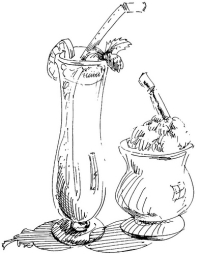

This page has usage examples for the following words:

dehydration 脱水症状 だっすいしょうじょう
dehydrated 脱水症状の だっすいしょうじょうの
disinfect 消毒 しょうどく
disinfectant 消毒剤 しょうどくざい
E.Coli 大腸菌 だいちょうきん
epidemic 伝染病 でんせんびょう
food poisoning 食中毒 しょくちゅうどく
food poisoning outbreak 集団食中毒 しょくちゅうどく
infection 感染 かんせん
infection route 感染経路 かんせんけいろ
prevention 予防 よぼう
quarantine 隔離 かくり
source of infections 感染源 かんせんげん
Salmonella サルモネラ菌
shigella 赤痢菌 せきりきん
My son may have food-poisoning.
息子が食べ物にあたったようです。
むすこがたべものにあたったようです。
I heard that a new food poisoning is going around and I'm worried.
新たな食中毒がはやっているので心配です。
あらたなしょくちゅうどくがはやっているのでしんぱいです。
It is said that complications develop after a while.
症状が長引くと他の病気を併発すると聞きました。
しょうじょうがながびくと ほかのびょうきを へいはつするとききました。
Is my son all right?
息子は大丈夫でしょうか。
むすこはだいじょうぶでしょうか。
I'm not sure what the source of the infections is.
感染源が何であるか思いあたりません。
かんせんげんが なにであるか おもいあたりません。
Did he eat any meat that was stored improperly?
管理が不充分な肉を食べませんでしたか。
かんりがふじゅうぶんなにくをたべませんでしたか。
We might have left some hamburger out of the ice box too long.
ハンバーガーの肉を冷蔵庫から出してそのままにしていたかもしれません。
ハンバーガーのにくをれいぞうこからだして そのままにしていたかもしれません。
It is important to wash hands frequently during food prepararion.
調理中は手をこまめに洗うことが大切です。
ちょうりちゅうは てをこまめにあらうことがたいせつです。
A conversation between a patient and a doctor about food poisoning
Patient:
First, there was the bean sprout poisoning outbreak in Japan several years ago. Then, this year (2009) we had new food poisoning outbreaks of spinach and peanut butter in the U.S. These yearly food poisoning outbreaks remind us that we must be vigilant in cleaning foods and hygiene in our daily lives. As there is an expression “Someone had food poisoning,” food poisoning can be mild or serious, and I think that early treatment is important in either case.
先年は日本でもやしが、本年（２００９年）は米本土でホウレン草とピーナッツバターと、毎年、新顔の集団食中毒がおこり、日常の食生活、衛生面での警戒が、さらに必要という思いを強くしました。一般的なことばで、「食べ物にあたった。」という表現がありますが、症状の軽いものから死にいたるものまであることから、早期の手当てが大切なんですね。
Doctor:
We often hear the saying “Produce and consume where you live”. While the movement began aiming at reducing energy use, it also has an advantage of knowing where foods are produced. As foods are mass-produced, and a distribution system has been developed, we often eat foods without knowing where they came from or are produced. Although food safety is regulated strictly by the public health agencies, the truth is that such agencies are overloaded. Individual consumers must pay close attention to food preparation, for example, chicken and vegetables should not be prepared using the same chopping board. Frequent hand washing and cleaning of cooking utensils is essential.
地産地消とよく言われていますが、本来の目標である省エネの面からだけでなく、生産元を確認できるといる利点は否定できません。食物の生産が大規模になり、加えて流通網が発達した現在、ともすれば生産元を知らずに食べていることも珍しくありません。食品の安全は公衆衛生局や保健所でも厳しく取り締まっていますが、手が回りかねないというのが現状です。消費者個人個人が食品の調理にも、以前にも増して注意をはらわなければなりません。例えば、鶏肉と新鮮な野菜類は別々の包丁、まな板を使用する。手や調理器具を頻繁に洗うといった具合です。
If you, unfortunately, come down with severe abdominal pain and bloody stool, seek immediate medical help. Supplementing body fluid is the key.
不幸にして、腹痛がひどい、血便などの症状があれば、直ちに医師の手当を要します。体液の補給がカギとなります
My two cents 一言おせっかい
Keep hot foods hot and cold foods cold.
This may sound like a simple thing to do. But, we often ignore and neglect it.
食物の管理法：熱いものは熱く、冷たいものは冷たく。
わかりきっているようでも、ともすれば忘れがちです。
[shi07]
| © 1995-2013 NACOS International Institute. All Rights Reserved. |